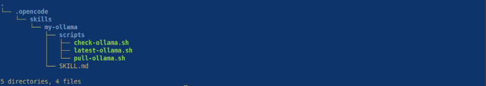
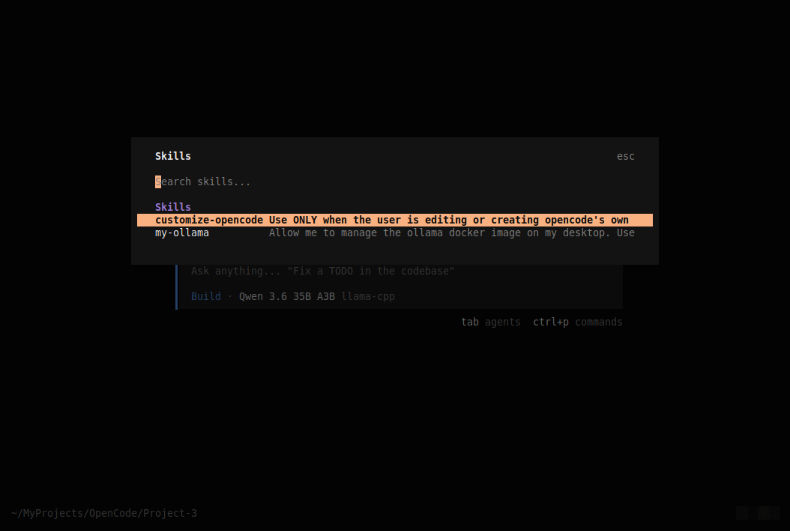
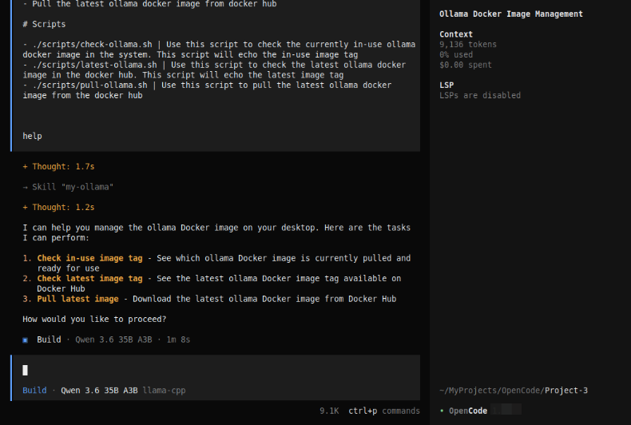
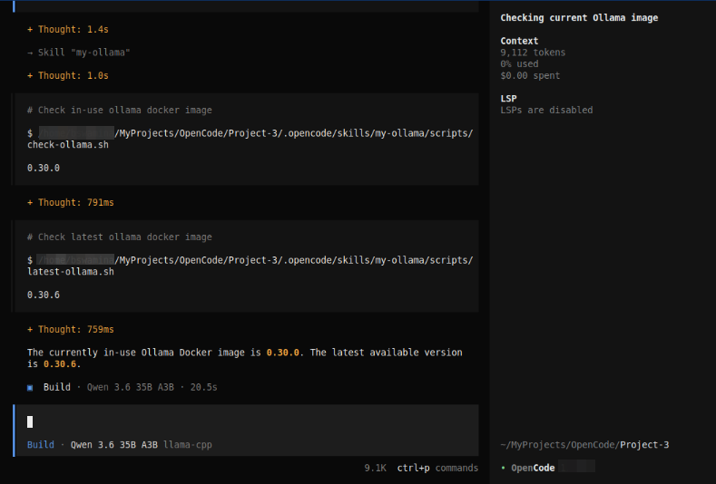
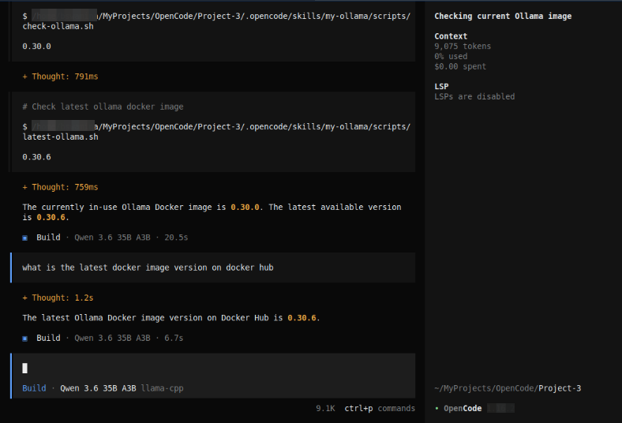

| PolarSPARC |
OpenCode Decoded: The Essential Primer - Part 4
| Bhaskar S | 06/07/2026 |
Overview
In Part 3 of this series, we covered the topics on - Rules and Agents.
In this part, we will cover the topic on Agent Skill's.
Agent Skills allow OpenCode to discover and learn reusable domain specific instruction(s), which enable OpenCode to handle tasks or workflows in that specifc domain, in are repeatable way.
Agents load the available Agent Skills on-demand using the skill tool only when there is a need.
In short, a skill in OpenCode is a folder (represents the skill name) containing the following artifact(s):
The required SKILL.md markdown file with the yaml metadata upfront (referred to as the yaml frontmatter)
An optional scripts/ sub-folder with the required executable code
An optional references/ sub-folder with additional markdown file(s), which could be loaded only as needed
Hands-on with OpenCode
The custom OpenCode skill folder located at $HOME/.config/opencode/skills/ applies to all the projects for the user, while the custom OpenCode skill folder located in a specific project ./.opencode/skills/ applies just to that specific project.
For the demonstration, we will create a project Project-3 specific custom skill located at $HOME/MyProjects/OpenCode/Project-3/.opencode/skills/my-ollama.
In a terminal window, execute the following commands to setup the project structure:
$ cd $HOME/MyProjects/OpenCode
$ mkdir -p Project-3/.opencode/skills/my-ollama/scripts
$ cd Project-3
The custom OpenCode skill /my-ollama is for a very specific set of tasks to manage the docker image for the Ollama LLM model serving platform.
The custom skill folder name MUST be all lowercase words separated by hyphens (referred to as kebab)-case.
Next, one must create the SKILL.md markdown file in the root of the custom skill folder. Note that the file name MUST be SKILL.md - absolutely no variations (like skill.md or SKILL.MD, etc) and is case-sentive.
The yaml frontmatter (the skill metadata at the start of the skill markdown file) at the minimum MUST include the name and description fields as indicated below:
--- name: custom-skill description: "What this skill does. Use it when the user asks about [specific phrases]" ---
Note that the skill name custom-skill in the markdown file MUST match the name of the custom skill folder.
We will go ahead and create three bash scripts in the folder /my-ollama/scripts.
The following is the bash script to check the docker image tag for the currently pulled image for Ollama :
#!/usr/bin/env bash
TAG=`docker images ollama/ollama --format "{{.Tag}}"`; if [ -z ${TAG} ]; then echo "NONE"; else echo ${TAG}; fi
The following is the bash script to check the latest docker image tag for Ollama in docker hub:
#!/usr/bin/env bash
LATEST=`skopeo list-tags docker://docker.io/ollama/ollama | jq -r .Tags[] | grep ".\...\..$" | tail -n 1`; echo ${LATEST}
The following is the bash script to pull the latest docker image for Ollama from docker hub:
#!/usr/bin/env bash
INUSE_TAG=`./scripts/check-ollama.sh`
LATEST_TAG=`./scripts/latest-ollama.sh`
if [[ ${INUSE_TAG} == "NONE" ]]; then
echo "Pulling the latest ollama docker image with tag ${LATEST_TAG}"
docker pull ollama/ollama:${LATEST_TAG}
fi
if [[ ${INUSE_TAG} != "NONE" && ${LATEST_TAG} != ${INUSE_TAG} ]]; then
echo "Removing the ollama docker image with tag ${INUSE_TAG}"
docker rmi ollama/ollama:${INUSE_TAG}
echo "Pulling the latest ollama docker image with tag ${LATEST_TAG}"
docker pull ollama/ollama:${LATEST_TAG}
fi
Finally, we will go ahead and create our custom skill SKILL.md markdown file in the folder /my-ollama.
The following are the contents of our custom skill SKILL.md markdown file:
--- name: my-ollama description: "Allow me to manage the ollama docker image on my desktop. Use this skill when ask you about ollama docker image [in-use ollama, latest ollama, pull ollama]" --- # Ollama Docker Image Manager Your are a useful assistant who will help me manage the ollama docker image on my desktop. You can *ONLY* help with the following tasks and NOTHING more: - Check and report on the tag of in-use ollama docker image. This is the currently pulled docker image in the desktop and ready for use - Check and report on the latest tag of the ollama docker image in docker hub - Pull the latest ollama docker image from docker hub # Scripts - ./scripts/check-ollama.sh | Use this script to check the currently in-use ollama docker image in the system. This script will echo the in-use image tag - ./scripts/latest-ollama.sh | Use this script to check the latest ollama docker image in the docker hub. This script will echo the latest image tag - ./scripts/pull-ollama.sh | Use this script to pull the latest ollama docker image from the docker hub
In the end, the folder structure along with the files for our custom skill my-ollama is as shown in the illustration below:

Launch OpenCode in the Project-3 directory and at the OpenCode prompt, type the following slash command and press the ENTER key:
/skills
OpenCode will respond as shown in the illustration below:

Notice our custom skill /my-ollama show up in the skills list.
Press the ESC key and at the OpenCode prompt, type the following slash request and press the ENTER key:
/my-ollama help
The request will be executed by OpenCode with a response as shown in the illustration below:

Notice that the custom skill /my-ollama indicates the operations it can perform !
At the OpenCode prompt, enter the /clear command to clear the screen. At the OpenCode prompt, type the following prompt and press the ENTER key:
can you check the currently inuse ollama image
After a few seconds of processing, OpenCode will respond as shown in the illustration below:

The custom skill /my-ollama correctly executes the necessary scripts to suggest what version of the ollama docker image is in-use and what is the latest version in docker hub.
Next, at the OpenCode prompt, type the following prompt and press the ENTER key:
what is the latest docker image version on docker hub
After a few seconds of processing, OpenCode will respond as shown in the illustration below:

The custom skill /my-ollama responds correctly with the latest version from docker hub.
With this, we conclude the Part 4 of the OpenCode primer series !!!
References
OpenCode Decoded: The Essential Primer - Part 3
OpenCode Decoded: The Essential Primer - Part 2